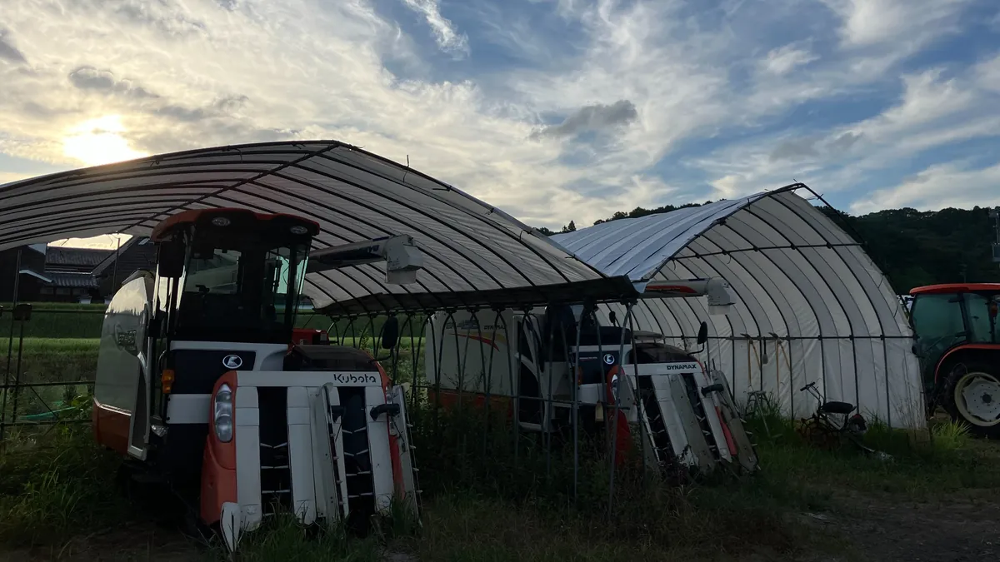
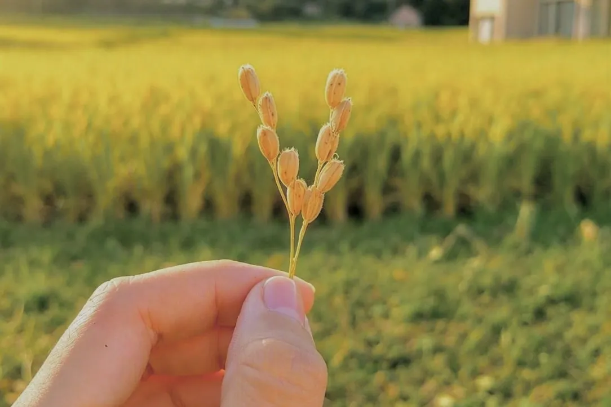

まちおこしは、全部が全部、成功事例じゃなくていい。等身大の記録を残すと決めた理由。

うまくいく保証はありません。でも、すでに多くの人達が、このまちおこしの挑戦に貴重な自分の時間を託してくれています。
一線を引退した人、地域外の人、農業とは関わりのなかった人。本来ならこれ以上頑張らなくても良い人たちや、東条地域とも無関係だったかもしれない人たちが、動き始めてくれています。
1. 新興住宅地や企業を巻き込んだ「農村RMO」は前例がない
令和8年度、兵庫県加東市東条地域で組成した「とうじょうRMO」が、農林水産省が推進する「農村RMO（農村型地域運営組織）」に採択されました。
これまで岡本地区の営農法人として発信してきましたが、今後は農業だけでなく、地方創生も含めた視点で発信していきます。
加東市公式ホームページ 加東市 農村型地域運営組織（農村RMO）について 東条地域で設立された「とうじょうRMO」が、農林水産省の推進する「農村型地域運営組織（農村RMO）」に採択されました。とうじょうRMOは、過疎化が進む伝統的な農村「岡本地区・森地区」と、比較的新しく開発が進んだ新興住宅地「南山地区」が一体となって連携しています。
さらに、営農法人や研究機関に加え、酒造企業様まで名を連ねています。過疎地域と新興住宅地。農業と酒造り。一見つながりにくいものを一つの座組にまとめる、おそらく前例のない挑戦です。

2. 正直に言います。「新興住宅地の巻き込み」は賭けです
うれしいご報告である一方で、私たちには大きな不安があります。「新興住宅地の住民の皆さんが、農地保全や地域活動を本当に“自分ごと”として受け止めてくれるか」やってみないと分からないからです。
- もともと農業をしていたわけではない
- 先祖代々の土地を守っているわけでもない
- 高齢化などの喫緊の課題が顕在化しているわけでもない
そんな新興住宅地に住む方々に、「草刈りを一緒にやりませんか」「獣害対策を考えましょう」と呼びかけて、共感や参加を得られるのか。
計画書の上ではきれいな図が描けても、人の気持ちは単純ではありません。言葉では「前例のない挑戦」と言えても、実際にワークするかは未知数。これが私たちの偽らざる現状です。
3. それでも挑戦する理由。未知数にこそ価値がある
答えはシンプルです。誰もやったことがないからこそ、挑戦する価値があると考えています。
すでに正解が分かっている取り組みなら、私たちがやる必要はありません。しかし、過疎地域と新興住宅地を同じ座組に乗せた前例や、酒蔵まで巻き込んで第6次産業化を目指す座組は、決して多くありません。
正解が分からない領域に踏み出すということは、当然、参加者が集まらなかったり、意見がぶつかったりといった「失敗する可能性」も含んでいます。それでも構わないと、私たちは思っています。
4. 失敗事例もまた、全国を救う「資産」になる
なぜ失敗しても構わないのか。それは、この挑戦を通じた気づきそのものが、全国の同じ課題を抱える地域にとっての資産になると考えているからです。
もし巻き込みがうまくいかなかったとしたら、「なぜ壁があったのか」「どんな声かけなら響くのか」という記録は、次に同じ挑戦をする地域の勝率を上げる貴重なデータになります。
逆にうまくいけば、人口減少に悩む地域へ「異なる属性を持つ地域を巻き込む」という新しい選択肢を提示できます。
成功しても失敗しても、誰かの役に立つ。だからこそ国がその価値を認め、挑戦するチャンスを与えてくれたのだと思っています。
5. 採択はゴールではなく、実証のスタートライン
今回の採択は、お墨付きではなく「うまくいくか分からないことを、正式に試していい機会を与えられた」という感覚です。

だからこそ、これから発信していく情報は綺麗な成功談だけではありません。思い通りにならなかったこと、地域での衝突、心が折れそうになったことなど、等身大の記録を包み隠さずお伝えしていきます。批判や苦情も正面から受け止めるつもりです。
それこそが、全国の地域にとって一番価値のある情報だと信じています。この座組に名前を連ねてくれた一人一人が未来の可能性です。私たちの挑戦の行方を、ぜひ一緒に見守ってください。

この記事を書いた「とうじょうRMO」について
岡本・森・南山の3地区が協力し、農地を守り、地域資源を活かし、暮らしを支える農村型地域運営組織（農村RMO）です。スマート農業とコミュニティの力で、山田錦の産地を次の世代へつなぐ挑戦をしています。
この挑戦の目撃者になりませんか？
とうじょうRMOでは、気候変動や担い手不足といった課題に対し、スマート農業やコミュニティの力で立ち向かっています。
私たちの活動の「いま」を、まずは公式LINEから覗いてみてください。